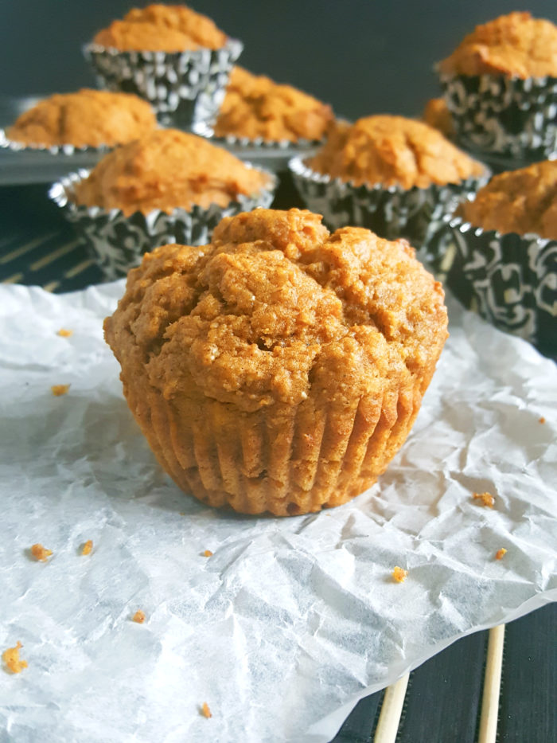

Pumpkin Muffins

Description
These chewy and delicious pumpkin muffins are somewhat healthy due to the whole wheat flour, Greek yogurt, and lack of refined sugar.
Ingredients
- 1 cup canned pumpkin puree
- 2/3 cup maple syrup or honey
- 1/4 cup Greek yogurt
- 1/4 cup vegetable oil
- 1 egg
- 2 tsp vanilla extract
- 1 2/3 cup whole wheat flour
- 1 tsp cinnamon
- 1/4 tsp nutmeg
- 1/2 tsp baking soda
- 1/2 tsp baking powder
- 1/2 tsp salt
Steps
- Preheat oven to 350°F. Line muffin pan with muffin liners and set aside.
- In a large bowl combine the pumpkin puree, maple syrup/honey, and Greek yogurt.
- Beat in the oil, egg, and vanilla extract.
- In another large bowl whisk together the flour, cinnamon, nutmeg, baking soda, baking powder, and salt.
- Add the dry ingredients to the wet ingredients and stir until incorporated (batter will be thick). Do not over mix.
- Scoop the batter into the muffin pan distributing it evenly between the muffin cups.
- Bake for 18 - 20 minutes.
- Cool in pan 10 minutes then remove.
Home